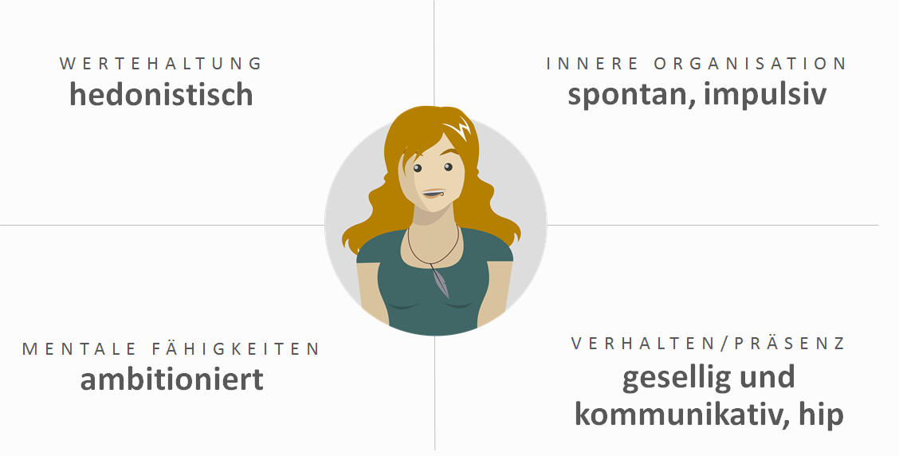

Der Anwendungscharakter
Um die Anwendung zum Informieren und Buchen eines Cargobike Erlebnisses zu gestalten, wurde im ersten Schritt ein Charakter ausgearbeitet, welcher in seinem Auftreten und Handeln die gewünschte Kommunikation widerspiegelt.
In diesem Fall handelt es sich um die hippe Freundin, die ständig unterwegs ist und Lustiges erlebt. Auf Instagram postet sie regelmäßig Schnappschüsse, die ihr spannendes Leben festhalten und auf Facebook postet sie ihre Status Updates gerne mal auf Englisch, da sie viele Freunde aus unterschiedlichen Ländern hat. Mit ihrer offenen und enthusiastischen Art fühlt sie sich wohl unter Leuten und man kann sich darauf verlassen mit ihr eine lustige Zeit zu haben.
Ein kleines bisschen möchte man so sein, wie sie es ist. All diese Merkmale und Charaktereigenschaften lassen sich auch auf die Anwendung übertragen. Die Seite macht Lust auf Urlaub mit Freunden und erzeugt das Gefühl “Whoa.. Das sieht nice aus, das will ich auch machen!”. Geplant ist es in Entscheidungsprozessen die gesamte Gruppe mit einzubeziehen.
Der Buchungsprozess
Beim Aufruf der Seite ist ein Video zu sehen in dem das Cargobike Add-On im Einsatz gezeigt wird. Es ist ein Zusammenschnitt verschiedener Szenen bei denen Menschen und deren Erlebnis im Vordergrund steht. Dabei geht es nicht darum das Produkt vorzustellen, sondern um den Transport von Emotionen.
Zu sehen ist zum Beispiel eine Gruppe, die unterwegs ist, um die Umgebung zu entdecken. Junge Leute, die an einem See gemeinsam grillen und dabei Spaß haben. Tanzende Studenten, die auf einer Wiese ihre eigene kleine Party feiern.
Ziel ist es dem Betrachter zu zeigen wie viel Spaß man bei einem Ausflug haben kann und dadurch sein grundsätzliches Interesse zu wecken.

Im weiteren Verlauf der Seite werden nun die verschiedenen Features vorgestellt, welche für das tolle Erlebnis sorgen:
- Flexibel die Gegend erkunden
- Stressfrei
- Im Schatten kühle Getränke genießen
- Gemeinsames Grillen
- Tolle Atmosphäre durch Musik
Im Anschluss daran kommt eine Aufforderung im Stile: “Du hast auch Bock drauf? Wo willst du deinen Tag verbringen?”. Der Nutzer hat nun die Möglichkeit sein Ausflugsziel anzugeben und es wird nach kooperierenden Fahrradhändler in der Umgebung gesucht. Gibt es einen Händler in der Nähe hat er nun die Option in den Buchungsprozess einzusteigen oder er kann seine Freunde fragen, was sie davon halten.

Hierbei wird ein kurzes Videosnippet mit seinen Freunden über WhatsApp, Facebook oder einem anderen Kommunikationskanal geteilt. Inhaltlich ist es ähnlich zu dem Header-Video, allerdings soll es sehr viel kürzer und schneller geschnitten sein. Das Kurzvideo endet mit einer aktivierenden Frage, ob Interesse besteht: “Bock drauf?”.